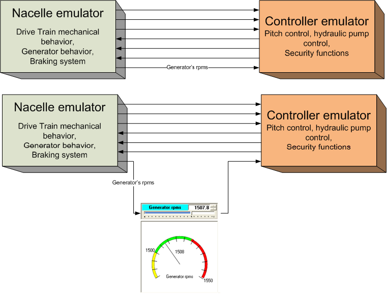

LdP indicators/controls
To facilitate understanding of the functionalities of these components, we will first look at the objective to be achieved. In the figure below, at the top, we have two blocks ("Nacelle emulator" and "Controller emulator") used in a particular simulator and with certain connections between them. One of them refers to "Generator rpms."

At the bottom, we have the same blocks, but this time the "Generator rpms" output signal is passed through a synoptic so that the user can see its value in real time. In this synoptic, we have two indicators: one "linear" and one "circular." The circular indicator is "coupled" to the linear one. The linear indicator has two connections: one on the left (input) and one on the right (output). In a "normal" situation, it is assumed that this component should behave as a mere indicator, i.e., replicating the value of its input at its output.
However, it is possible to think that during the execution of a simulation it may be interesting to have an easy-to-use mechanism that allows testing the reaction of one of the simulator components (in this case, the "Controller emulator") when the value of the "Generator rpms" signal it receives does not match reality (which is the value of the "Generator rpms" signal coming out of the "Nacelle emulator"). This could be implemented by adding another "graphic control" (or button) to the synoptic that would allow this functionality: however, this solution would have the disadvantage of complicating the synoptic and also making it larger.
The linear LdP component shown in the figure above solves this problem by adding the functionality of being able to work in three "modes":
•In "tracking mode": in this case, its output value corresponds to its input value, which is also the one represented.
•In "force mode": in this mode, the various subcomponents (the text input and the slider) with which the user modifies the output of this component are active, regardless of the value of its input.
In this way, the same component serves both purposes.
Changing modes is very simple: just click on the component and press the "F6" key, which switches between the two states. The change to "force" can be protected by a keyword.
There is a third mode called "display only," whose only function is to serve as an indicator, without the ability to replicate the value of its input in its output. This mode can only be selected during the development phase, not during execution.
There are two LdP indicators, one for analog signals and one for digital signals.
Signal type |
tracking mode |
force mode |
Analog |
|
Red edge |
Digital |
green border |
red border |
Examples:
The following figures show some configurations used in certain simulators.